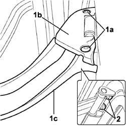
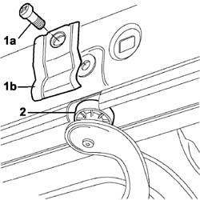

7020C13 Upper support and sliding DEVICE for one sliding side door, left or right - R.R.
- Path
- Procedures > 70 FITTINGS > 7020 LOAD CARRYING COMPARTMENT DOORS > 7020C sliding side door > 7020C13 Upper support and sliding DEVICE for one sliding side door, left or right - R.R.
- Kind
- repair procedure (removal / refitting; the operation number is the code)
- Applies to
- engines: 1.4 8v, 1.6 16v, 1.3 JTD 16V, 1.9 JTD 8V; all production periods
- Interactive page
- https://sloeber94.github.io/elrnDB-fDbl/en/#/2585047
Applies to: engines: 1.4 8v, 1.6 16v, 1.3 JTD 16V, 1.9 JTD 8V; all production periods; only with equipment: 7 seater
 Removing
Removing
 Refitting
RefittingCarry out
Op. 7020C40 SLIDING SIDE DOOR UPPER GUIDE TRIM (ONE) LEFT OR RIGHT - R.R..
Position a prop beneath the sliding door, opened to half way across the opening.
1. Undo bolts (1a) and remove upper guard (1b) and lower guard (1c) of the support device.
2. Unscrew the bolts securing the upper support device to the sliding side door.

Applies to: engines: 1.4 8v, 1.6 16v, 1.3 JTD 16V, 1.9 JTD 8V; all production periods; only with equipment: 7 seater
1. Unscrew bolts (1a) and remove bracket (1b) covering the groove on the steering system.
2. Remove the upper support and slide device, removing the bearing from the groove on the upper slide.

Applies to: engines: 1.4 8v, 1.6 16v, 1.3 JTD 16V, 1.9 JTD 8V; all production periods; only with equipment: 7 seater
Refitting
RemovingPosition the upper support and slide device in its seat and fit the support bearing through the groove in the upper guide.
Position the groove cover bracket to the guide and tighten the bolt.
Tighten the slide and support device bolts to the sliding side door.
Position both slide device guards and tighten the bolts.
Remove the prop beneath the door.
Carry out
Op. 7020C40 SLIDING SIDE DOOR UPPER GUIDE TRIM (ONE) LEFT OR RIGHT - R.R..